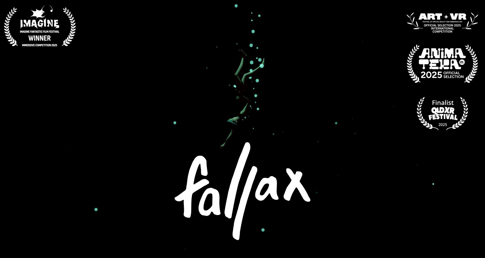
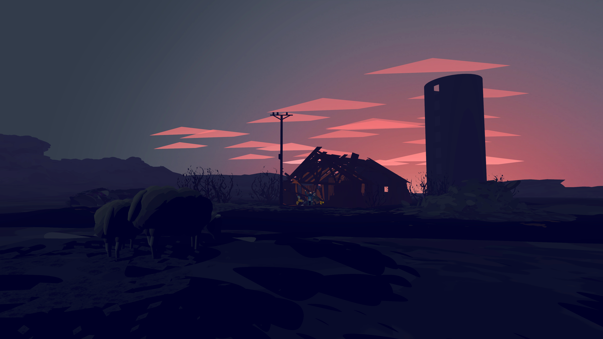
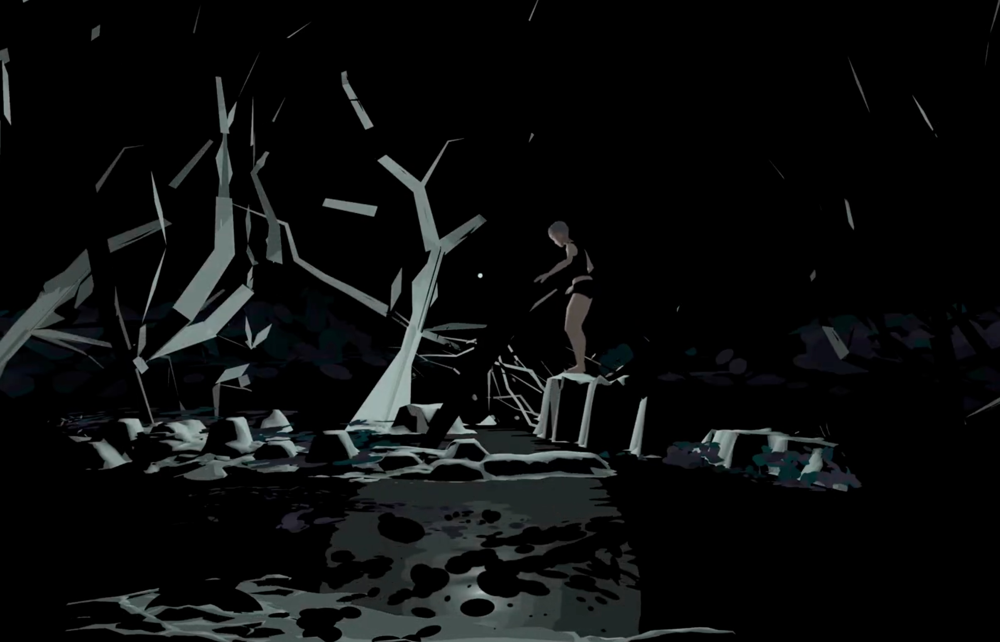
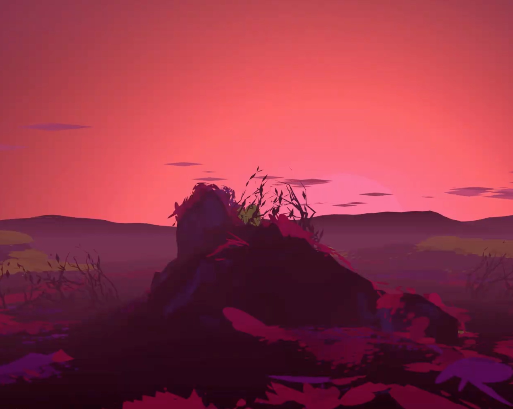
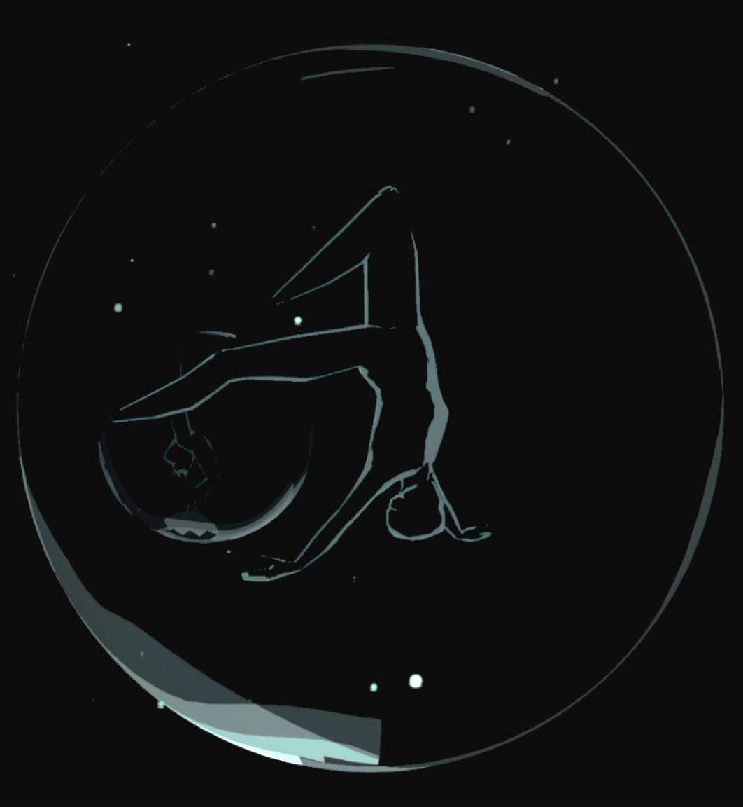
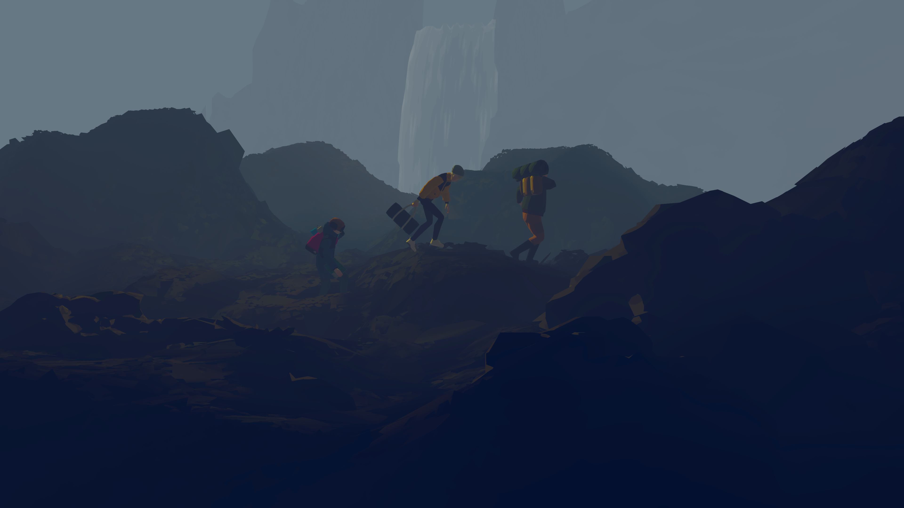

Fallax - Iceland's First Film for VR devices
2025
Director

An escaped convict flees into the Icelandic highlands, and is pulled into a mysterious world where time and nature move differently.
Iceland's first film in VR, incorporating motion captured circus performers, and loosely inspired by the country's nature and folklore.
Fallax is Huldufugl's first film, and we've been delighted at the reception it's received internationally so far!
This piece was born out of a collaboration with UK aerial circus company Hikapee, whom we had been working with since 2018 on a large-scale stage production (also inspired by Icelandic folklore) - but when COVID paused that stage production, we took a little side-quest to write and produce an animated VR short film using the same performers.

The first step was to find a motion capture company brave enough to work with tumbling, spinning circus performers using silks, trapeze and counterbalancing equipment - a real challenge for the tracking system - and then do the entire thing on location, whilst adhering to strict COVID-19 safety measures.

We were extremely lucky to find a partner in Target3D, who sent an incredible crew to join our artists in isolation at 101 Outdoor Arts in Newbury for a week. Under Bryony from Hikapee's direction, they recorded an entire narrative of aerial circus-infused action.

It's a unique challenge to produce animated work for VR - where almost anything is possible in terms of angles, lighting, sound and set design. For our piece, we're taking a lot of cues from theatre over film in terms of set layout and the audience's relationship to the performers - but this still leaves us a huge possibility space to play with, which is extremely exciting!


We're also aiming for a unique art style that represents the Icelandic nature - acheived through procedural modelling in Houdini, taking the rough outlines of landscapes, and 'shredding' them into thousands of small, individually coloured polygons. This approach retains sharp edges in VR even up-close, without using textures, whilst also giving us fine control over colour, pre-baked static lighting, and vertex shader effects like wind movement in trees, water and moss.
